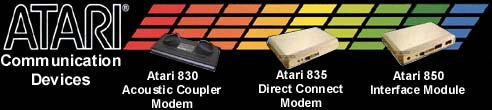

The Atari 830 Acoustic
Coupler Modem
The Atari 830 modem was sold separately and also in the Telecommunicator
Package that Atari sold. The package included the 830 modem,
modem cable, 850 interface module, owners manual, 850 technical manual
and the Telelink I communications cartridge. The kit
also included signups to Compu$erve and The Source on-line networks.
Suddenly your computer became a thousands times more powerful and useful,
on the screen came (VERY SLOWLY) worlds of information and more importantly
once on CompuServe.... CHAT. You could go to the Atari
Forum and suddenly you could talk with other Atari computer owners, then
you found out about the world of Bulletin Board Systems, it was amazing
and fun. However when you used the modem there could be no
TV, no radio, nothing.... because when you used an acoustic
coupler modem, IT HEARD EVERYTHING!!!! Users who remember
so many frustrating nights of spending hours redialing manually on the phone
over and over again to the same number because a BBS was busy (hey no phones
with redial yet!), then you'd get on-line and all of a sudden, someone
would knock on your door or you'd sneeze or your friend would talk too
loud and... WHAM!!! (xxxxxxxxx00x0xx0x0x0x0xx0x0x0x0xx0x) garbage across
the screen followed by: NO CARRIER, (AAAArrrrrrgggghhh!!!!).
Well it was a challenging and fun first try at telecommunicating.
Boy many users couldn't wait to get their hands on an Atari 835 or Hayes
Smartmodem 300!!!
Note: In the movie SNEAKERS starring
Robert Redford. Several technical wizards with rather shady
pasts stubble onto a chip that can un-encrypt anything. During the scene where they are being traced by the NSA look at the modem
they are using and.... yup! You guessed it, its an Atari 830 modem.